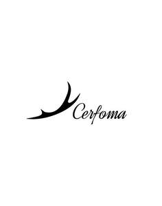

Trade Mark Journal No.2025/014 4 April 2025
UK00004174993 17 March 2025 (3,18,25)

- Class 3
- Perfume; Perfumes; Perfume oils; Perfumery and fragrances; Amber [perfume]; Fragrances; Oils for perfumes and scents; Fragrance sachets; Musk [perfumery]; Cologne; Perfume water; Aromatics for perfumes; Room perfume sprays; Liquid perfumes; Potpourris [fragrances]; Colognes; Scents; Fragrance emitting wicks for room fragrance; Aromatics for fragrances; Perfumery; Perfumes for cardboard; Fragrance refills for non-electric room fragrance dispensers; Cedarwood perfumery; Extracts of perfumes; Eau de cologne [cologne water]; Extracts of flowers [perfumes]; Flowers (Extracts of -) [perfumes]; Extracts of flowers being perfumes; Body deodorants [perfumery]; Perfumes for ceramics; Ionone [perfumery]; Deodorants for personal use [perfumery]; Aftershave lotions; Body fragrances; Perfumeries; Fragrance preparations; Perfume oils for the manufacture of cosmetic preparations; Perfumed potpourris; Vanilla perfumery; Fragrances for automobiles; Household fragrances; Room perfumes in spray form; Perfumed sachets; Fragrance sachets for eye pillows; Natural oils for perfumes; Room fragrances; Perfumery products; Aftershave; Perfumed soaps; Feminine deodorant sprays; Mint for perfumery; Cologne water; Solid perfumes; Scented water for fragrancing; After-shave lotions; Perfuming sachets; Peppermint oil [perfumery]; Air fragrance preparations; Perfumed soap; Aftershave balms; Scented oils; Scented linen sprays; Synthetic perfumery; Aftershave balm; Scented sachets; Air fragrance reed diffusers; Perfumed powders [for cosmetic use]; Geraniol for fragrancing; Scented body lotions; Aftershaves; Synthetic vanillin [perfumery]; Perfumed powder [for cosmetic use]; Scented soaps; Incense spray; Perfumed powders; Perfumed creams; Scented body spray; Eau de Cologne; Eau de cologne; Essential oils as perfume for laundry purposes; Suntan lotion [cosmetics]; Linen (Sachets for perfuming -); Sachets for perfuming linen; Perfumed powder; Eau de colognes; Essences for fragrancing; Scented room sprays; Ethereal oils for fragrancing; Fumigation preparations [perfumes]; After-sun oils [cosmetics]; Suntan oils [cosmetics]; Perfumed lotions [toilet preparations]; After-shave; Fragrance for household purposes; Aromatherapy lotions; Eaux de Cologne; Eaux de cologne; After-shave balms; Scented body lotions and creams; Aftershave creams; Scented fabric refresher sprays; Skin fresheners [cosmetics]; Tanning oils [cosmetics]; Perfumed body lotions [toilet preparations]; Deodorant soap; Soap (Deodorant -); Fragrant sachets; Incense sachets; Aftershave milk; Agarwood [incense]; Geraniol fragrancing compounds; Roll-on deodorants [toiletries]; Natural perfumery; Perfumed water; Cosmetics; Eau de parfum; Makeup; Make-up; Facial makeup; Lip makeup; Nail makeup; Eye makeup; Theatrical makeup; Make-up remover; Natural makeup; Skin make-up; Make-up primer; Make-up removers; Organic makeup; Eye makeup remover; Make-up primers; Make-up powder; Powder (Make-up -); Powder for make-up; Multifunctional makeup; Foundation make-up; Make-up foundation; Make-up pencils; Make-up for the face; Make-up for compacts; Eye make-up; Make-up foundations; Make-up palettes containing cosmetics; Chalk for make-up; Make-up removing lotions; Eye make-up removers; Eyes make-up; Make-up kits; Make-up base; Make-up preparations; Make-up removing creams; Eyelid doubling makeup; Makeup setting sprays; Make-up removing gels; Hair cosmetics; Make-up for the face and body; Facial concealer; Hair mascara; Skincare cosmetics; Make-up preparations for the face and body; Make-up removing preparations; Hairstyling serums; Facial creams [cosmetics]; Facial gels [cosmetics]; Make-up removing milks; Hairstyling masks; Make-up removing milk; Skin masks [cosmetics]; Eyeliner; Cosmetics for the use on the hair; Body and facial creams [cosmetics]; Lip cosmetics; Skin moisturizers used as cosmetics; Compacts containing make-up; Cosmetic hair lotions; Body and facial gels [cosmetics]; Mascara; Eye-shadow; Fake blood being theatrical make-up; Eyeshadow; Lip stains [cosmetics]; Cosmetics for eye-lashes; Nail primer [cosmetics]; Eyebrow cosmetics; Facial moisturisers [cosmetic]; Hair styling lotions; Moisturisers [cosmetics]; Facial beauty masks; Facial cleansers [cosmetic]; Cosmetic facial lotions; Facial lotions [cosmetic]; Nail cosmetics; Nail paint [cosmetics]; Lipstick; Colour cosmetics for the skin; Cosmetic facial masks; Facial masks [cosmetic]; Hair moisturizers; Cosmetic hair dressing preparations; Self-tanning preparations [cosmetics]; Eyeshadow palettes; Hair care lotions [for cosmetic use]; Anti-aging moisturizers used as cosmetics; Eye cosmetics; Body creams [cosmetics]; Nail polish removers [cosmetics]; Hair care creams [for cosmetic use]; Facial creams [cosmetic]; Facial creams [for cosmetic use]; Tanning gels [cosmetics]; Colour cosmetics; Cosmetics for use on the skin; Nail varnish remover [cosmetics]; Beauty preparations for the hair; Facial wipes impregnated with cosmetics; Night creams [cosmetics]; Skin cleansers [cosmetic]; Skin moisturizer masks; Beauty care cosmetics.
- Class 18
- Handbags for ladies; Ladies handbags; Bags; Bags for clothes; Small bags for men; Toiletry bags; Luggage bags; Tote bags; Belt bags and hip bags; Bags for umbrellas; Make-up bags; Duffle bags; Handbags for men; Shoe bags; Leather bags and wallets; Luggage, bags, wallets and other carriers; Leather bags; Evening bags; Makeup bags; Gym bags; Carry-all bags; Nappy bags; Garment bags; Bags for climbers; Bags for campers; Carry-on bags; Knitting bags; Duffel bags; Bum bags; Athletic bags; Leather shopping bags; Cloth bags; Casual bags; Nose bags [feed bags]; Bags (Nose -) [feed bags]; Weekend bags; Carrying bags; Grocery tote bags; Cosmetic bags; Toilet bags; Messenger bags; Knitted bags; Diaper bags; Travelling bags; Crossbody bags; Bags for sports clothing; Souvenir bags; Hand bags; Cross-body bags; Towelling bags; Traveling bags; Sport bags; Trunks and travelling bags; Hip bags; Sling bags; Trunks and traveling bags; Flexible bags for garments; Handbags, purses and wallets; Travelling bags [leatherware]; Bags for sports; Sports bags; Courier bags; Mesh bags for shopping; Mesh shopping bags; Bags for carrying pets; Belt bags; Clutch bags; Textile shopping bags; Camping bags; Wheeled bags; Hunting bags; Beach bags; Shoe bags for travel; Kit bags; Baby carrying bags; Drawstring bags; Suit bags; Canvas bags; Canvas shopping bags; Shoulder bags; Waist bags; Travel bags; Bags for travel; Bags [envelopes, pouches] of leather, for packaging; Bags [envelopes, pouches] of leather for packaging; Bags [envelopes, pouches] for packaging of leather; Umbrella bags; Bags for school; School bags; Roller bags; Waterproof bags; Attaché bags; Reusable shopping bags; Garment bags for travel; Bags (Garment -) for travel; Wheeled shopping bags; Sling bags for carrying babies.
- Class 25
- Sports wear; Clothes for sports; Clothing for sports; Sports clothing; Tennis wear; Sports jerseys and breeches for sports; Sports shoes; Sports garments; Sports shirts; Footwear for sports; Sports footwear; Sports pants; Clothing for wear in wrestling games; Sports jackets; Jackets being sports clothing; Boots for sports; Sports clothing [other than golf gloves]; Leisure wear; Clothing for leisure wear; Sports jerseys; Sports bras; Sports vests; Sports socks; Footwear not for sports; Sports headgear [other than helmets]; Headgear for wear; Ski wear; Sports singlets; Clothes for sport; Moisture-wicking sports shirts; Sports bibs; Sport shirts; Shoes for casual wear; Sports over uniforms; Sport shoes; Moisture-wicking sports pants; Exercise wear; Moisture-wicking sports bras; Casual wear; Clothing for wear in judo practices; Footwear for sport; Footwear for use in sport; Combative sports uniforms; Articles of sports clothing; Sports caps; Surf wear; Sports caps and hats; Ladies wear; Swim wear for children; Boots for sport; Sports [Boots for -]; Cleats for attachment to sports shoes; Athletic clothing; Maternity wear; Formal wear; Sport coats; Evening wear; Rain wear; Children's wear; Head wear; Sports shirts with short sleeves; Bridesmaids wear; Sashes for wear; Face masks [fashion wear] ; Dresses for evening wear; Athletic uniforms; Breeches for wear; Athletics footwear; Athletics shoes; Infant wear; Athletic footwear; Athletic shoes; Swim wear for gentlemen and ladies; Football shoes; Bras; Strapless bras; Straps for bras; Nursing bras; Adhesive bras; Brassieres; Bra straps; Strapless brassieres; Bralettes; Bra extenders; Fitted swimming costumes with bra cups; Bra straps [parts of clothing]; Camisoles; Bodices [lingerie]; Undergarments; Teddies [undergarments]; Girdles [corsets]; Maillots [hosiery]; Bra strap extenders; Shapewear; Lingerie; Maternity lingerie; Jockstraps [underwear]; Adhesive brassieres; Swimsuits; Bikinis; Bustiers; Underwear for women; Bandeaux [clothing]; Maternity underwear; Underwear; Tankinis; Thongs; Underwear (Anti-sweat -); Anti-sweat underwear; Briefs [underwear]; Girdles; Corsets [underclothing]; G-strings; Corsets; Sweat-absorbent underwear; Sweat-absorbent underclothing [underwear]; Corsets [clothing, foundation garments]; Gussets for underwear [parts of clothing]; Knitted underwear; Babies' undergarments; Gussets for leotards [parts of clothing]; Panties; Bodysuits; Corsets [foundation clothing]; Corsets being foundation clothing; Chemises; Nipple pasties being underclothing; Trunks [underwear]; Maternity shirts; Maillots; Chemise tops; Maternity leggings; Corselets; Bottoms [clothing]; Swimwear; Babies' pants [underwear]; Leotards; Gussets for tights [parts of clothing]; Nightgowns; Blouses; Headbands [clothing]; Headbands for clothing; Slips [undergarments]; Maternity dresses; Undershirts; Tank-tops; Negligees; Jogging bottoms [clothing]; Knickers; Hosiery; Maternity shorts; Teddies [underclothing]; Maternity sleepwear; Monokinis; Gussets for stockings [parts of clothing]; Tops [clothing]; Disposable underwear; Maternity pants; Maternity tops; Undershirts for kimonos (juban); Shorts [clothing]; Underclothes; Thong sandals; Underclothing for women; Underclothing (Anti-sweat -); Anti-sweat underclothing; Suspender belts for women; Dress shirts; Underpants for babies; Nightdresses; Womens' undergarments; Nappy pants [clothing]; Peignoirs; Bodices; Collars for dresses; Shorts; Trousers shorts; Bermuda shorts; Boxer shorts; Swim shorts; Fleece shorts; Cycling shorts; Sweat shorts; Boxing shorts; Gym shorts; Boy shorts [underwear]; Tennis shorts; Rugby shorts; Walking shorts; Golf shorts; Sliding shorts; Board shorts; Leggings [trousers]; Pants; Capri pants; Denim pants; Short trousers; Trousers; Padded shorts for athletic use; Chino pants; American football shorts; Cycling pants; Long-sleeved shirts; Jeans; Warm-up pants; Short-sleeved shirts; Dress pants; Turtleneck shirts; Waterproof pants; Short-sleeve shirts; Jogging pants; Corduroy pants; Stretch pants; Shirts; Sweatpants; Short-sleeved T-shirts; Skorts; Cargo pants; Sweat pants; Weatherproof pants; Pajama bottoms; Tights; Sweatshorts; Corduroy shirts; Denim jeans; Baselayer bottoms; Yoga pants; Waterproof trousers; Boardshorts; Camouflage pants; Tracksuit bottoms; Corduroy trousers; Men's and women's jackets, coats, trousers, vests; Snowboard trousers; Trousers for sweating; Riding trousers; Pirate pants; Sleeved jackets; Trouser socks; Slacks; Men's dress socks; Men's underwear; Sundresses; Sleeveless jackets; Leather pants; Yoga shirts; Golf trousers; Lounge pants; Denim jackets; Swim briefs; Babies' pants [clothing]; Athletic tights; Horse-riding pants; Open-necked shirts; Polo shirts; Button-front aloha shirts; Sweat shirts; Casual trousers; Sleeveless pullovers; Shirts for suits; T-shirts; Tee-shirts; Hooded sweat shirts; Shirts and slips; Snow pants; Blue jeans; Tennis shirts; Boxer briefs; Culotte skirts; Tap pants; Mock turtleneck shirts; Vest tops; Casual shirts; Underpants; Ski pants; Collared shirts; Tracksuit tops; Wind pants; Rain trousers; Trousers of leather; Camouflage shirts; Rugby shirts; Playsuits [clothing]; Sandals and beach shoes; Track pants; Sleeveless jerseys; Shoes for leisurewear; Knit shirts; Pantaloons; Padded pants for athletic use; Soccer shirts; Golf shirts; Woven shirts; Fishing shirts; Ramie shirts; Sleep shirts; Hunting shirts; Night shirts; Printed t-shirts; Under shirts; Shirt yokes; Yokes (Shirt -); Jerseys [clothing]; Sweatshirts; Shirt fronts; American football shirts; Button down shirts; Hoodies; Wristbands [clothing]; Jackets [clothing]; Collars [clothing]; V-neck sweaters; Jerseys; Jackets (Stuff -) [clothing]; Stuff jackets [clothing]; Kerchiefs [clothing]; Aprons [clothing]; Padded shirts for athletic use; Bandanas [neckerchiefs]; Denims [clothing]; Bandanas; Embroidered clothing; Bib shorts; Nightshirts; Waistcoats [vests]; Overshirts; Bandannas; Hooded sweatshirts; Clothes; Hats (Paper -) [clothing]; Paper hats [clothing]; Capes (clothing); Knit jackets; Gabardines [clothing]; Fabric belts [clothing]; Jackets; Visors [clothing]; Turtleneck sweaters; Neckties; Polo knit tops; Uniforms; Tracksuits; Party hats [clothing]; Foulards [clothing articles]; Hooded pullovers; Beanies; Fleece jackets; Beanie hats; Sweaters; Fleece pullovers; Cardigans; Turtleneck pullovers; Snowboard jackets; Balaclavas; Hoods [clothing]; Camouflage jackets; Turtlenecks; Pullovers; Parkas; Sweat jackets; Jumpers [sweaters]; Anoraks [parkas]; Quilted jackets [clothing]; Hooded tops; Jumpers [pullovers]; Fleece vests; Polar fleece jackets; Trenchcoats; Hooded bathrobes; Gilets; Scarves; Sheepskin jackets; Jumpsuits; Polo sweaters; Windcheaters; Cowls [clothing]; Casual jackets; Mock turtleneck sweaters; Sweatsuits; Aloha shirts; Fur coats and jackets; Fleece tops; Overcoats; Scarfs; Stuff jackets; Cashmere scarves; Fur jackets; Hats; Windproof jackets; Pique shirts; Blazers; Mufflers [clothing]; Gloves for apparel; Wind-resistant jackets; Padded jackets; Shoes; Insoles [for shoes and boots]; Insoles for shoes and boots; High-heeled shoes; Wooden shoes [footwear]; Dress shoes; Sneakers [footwear]; Slip-on shoes; Leather shoes; Tongues for shoes and boots; Tennis shoes; Jogging shoes; Ballet shoes; Esparto shoes or sandals; Walking shoes; Rubber shoes; Shoes soles for repair; Hiking shoes; Pullstraps for shoes and boots; Basketball shoes; Esparto shoes or sandles; Running shoes; Volleyball shoes; Soccer shoes; Shoe soles; Sneakers; Waterproof shoes; Heel pieces for shoes; Dance shoes; Snowboard shoes; Canvas shoes; Cycling shoes; Shoes for foot volleyball; Foot volleyball shoes; Wooden shoes; Platform shoes; Footwear soles; Soles for footwear; Golf shoes; Yoga shoes; Mountaineering shoes; Hockey shoes; Baby shoes; Roller shoes; Insoles for footwear; Riding shoes; Baseball shoes; Gymnastic shoes; Bowling shoes; Rain shoes; Boxing shoes; Training shoes; Aqua shoes; Handball shoes; Fittings of metal for boots and shoes; Skiing shoes; Beach shoes; Flat shoes; Nursing shoes; Leisure shoes; Shoes for infants; Stiffeners for shoes; Rugby shoes; Heel protectors for shoes; Footwear; Women's shoes; Work shoes; Flip-flops for use as footwear; Hidden heel shoes; Tap shoes; Apres-ski shoes; Deck shoes; Driving shoes; Pumps [footwear]; Shoe soles for repair; Infants' shoes; Sandals; Studs for football shoes; Spiked running shoes; Anglers' shoes; Boots; Trainers [footwear]; Shoe straps; Protective metal members for shoes and boots; Inner socks for footwear; Rubbers [footwear]; Wedge sneakers; Shoe uppers; Basketball sneakers; Knitted baby shoes; Track suits; Track jackets; Jogging suits; Suits; Track and field shoes; Down suits; Running Suits; Warm-up suits; Jump Suits; Gym suits; Suit coats; Swim suits; Swimming suits; Training suits; Body suits; Sweat suits; Footwear for track and field athletics; Ski suits; Zoot suits; Play suits; Rain suits; One-piece suits; Jumper suits; Motorcycle rain suits; Bathing suits; Suits (Bathing -); Dress suits; Skirt suits; Pram suits; Romper suits; Wind suits; Flying suits; Bathing suit cover-ups; Boiler suits; Sailor suits; Waterproof suits for motorcyclists; Karate suits; Snow suits; Motorcycle riding suits; Ski suits for competition; Warm up suits; Leisure suits; Evening suits; Three piece suits [clothing]; Shell suits; Men's suits; Judo suits; Taekwondo suits; Ballet suits; Leather suits; Suits of leather; Union suits; Suits made of leather; Dinner suits; Women's suits; Bathing suits for men; Gussets for bathing suits [parts of clothing]; Aikido suits; Jogging outfits; Jogging sets [clothing]; Snow boarding suits; Ladies' suits.
LOUZAN LTD